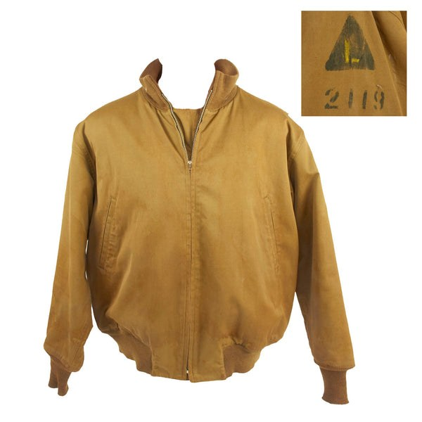
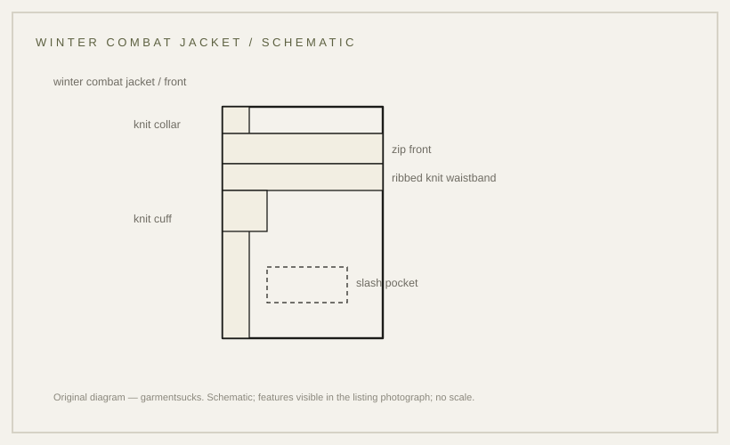

construction · 1942
The tanker jacket: short body, knit seals, zip front
The winter combat jacket: short body, knit seals, zip front — and a specification story that does not agree with itself.
probable Published 2026-11-13 · last checked 2026-11-13

1. Summary
The Winter Combat Jacket — the tanker jacket — is a short, lightly padded jacket with a zip front, knit collar, cuffs and waistband, issued to US armoured crews in the Second World War.
An object record confirms the designation and materials; the specification number and model dates come from reproducer accounts that contradict each other. Confidence: probable — the object record verifies designation and materials; the specification number and dating rest on conflicting T3 accounts.
2. What this is
Jacket, Combat, Winter: a hip-length jacket in cotton twill with a wool blanket lining, closed with a zip, with knit collar, cuffs and waistband and slash pockets.
The opening visible in the listing photograph is a plain zip with a knit collar — no lapels and no storm collar. Knit seals are the ribbed cuffs, waistband and collar that close the garment at wrist, waist and neck.
3. Origin and context
A Smithsonian record catalogues a Jacket, Combat, Winter; Model 1942 with a wool lining, cotton overall material, brass zipper and light olive drab colour, used in 1942.
Reproducer accounts place its introduction in 1941 or 1942 and disagree on the specification: one describes QMC P.Q.D. Spec. No. 26 as the first model from early 1941 and 26A as the more common model from early 1942; another states the jacket was designated 26 March 1942 as P.Q.D. Spec. No. 26. Both are T3, and the conflict is recorded rather than resolved.
4. How it works
The knit hems seal the jacket at the three places where air enters — neck, wrists and waist — while the short body keeps it clear of a hatch, a seat and a weapon. A wool blanket lining traps air next to the body.
The sealing and mobility argument is inference from the construction and from the garment's issue to armoured crews; no document opened for this card states the design intent.
5. Construction
Visible in the listing photograph: a central zip, a knit collar, knit cuffs and a ribbed knit waistband, two slash pockets at the waist, and a short body finishing at the hip. A stencilled triangle mark and a number are visible on the chest in the inset.
Per reproducer descriptions: cotton twill shell, wool blanket lining, two-needle seams, back pleats for arm movement, and an early patch-pocket type versus a later slash-pocket type. These details are T3 and marked unverified.
6. Variants across eras
| Variant | Year/country | Difference | Source status |
|---|---|---|---|
| Winter Combat Jacket, early model | 1941–42, US | patch pockets; spec number disputed (26 or 26A) | T3 only; conflicting |
| Winter Combat Jacket, later model | 1942 onward, US | slash pockets; wool-backed wind flap | T3 only |
| M-1943 field jacket | 1943, US | longer field jacket, different system | site card m43 |
| Modern reproduction | present | heavier shell, cleaner finish | market observation |
Competing accounts
Both accounts come from reproducers, not from Quartermaster documents. The museum record confirms the garment and its materials but is silent on the specification. A dated specification, a contract label, or a surviving label carrying a P.Q.D. number would settle it. The evidence currently favours neither account; the number and date stay unresolved.
| Account | Source (tier) | What it claims | Evidence offered | Weak point |
|---|---|---|---|---|
| AtTheFront | T3 | Spec. No. 26 is the first model, early 1941; the more common model is 26A, early 1942 | reproducer product notes | no document cited; commerce context |
| Bronson | T3 | Designated 26 March 1942 as P.Q.D. Spec. No. 26 | reproducer product notes | no document cited; conflicts with the account above |
| Smithsonian NMAH | T1 | Jacket, Combat, Winter; Model 1942, cotton with wool lining | object metadata | silent on the specification number and date |
7. Telling an original from a reproduction
Look at the knit parts first: original knit is dense and often felted, and the waistband is a wide rib rather than a narrow elastic band. Then the zip and the label: period hardware and a Quartermaster label.
Reproductions tend to be heavier and cleaner; some replace the knit waistband with elastic or drop the back pleats.
8. Common mistakes and myths
The common mistake is repeating a specification number as fact: the reproducer accounts disagree, so the number stays unresolved on this card.
A second mistake is treating the tanker jacket as the M-1943 field jacket: they are different garments with different bodies and closures.
9. How to read it in wear
The jacket reads through the knit seals and the short body: it stops at the hip and grips at the waist, so it sits above a belt and under a coat. Worn with high-waisted trousers it shortens the torso; worn over a longer shirt it reads as a bomber.
10. Modern designer trail
The tanker jacket's shape — short body, knit collar and cuffs, zip front — has been a recurring reference in menswear. No direct-influence claim is made here.
11. Specification
The left column records what a source states; the right column is empty because no reproduction figures are proposed.
| Recorded in sources | Reproduction suggestion |
|---|---|
| Jacket, Combat, Winter; Model 1942; cotton, wool lining, brass zipper, light olive drab (Smithsonian NMAH 1992.3091.05; metadata excerpt) | — |
| Knit collar, cuffs and waistband; zip front; slash pockets; short body (visible in the listing photograph) | — |
| Specification number/date: 26 (1941) vs 26A (1942) vs 26 designated March 1942 (T3 reproducer accounts; conflicting) | — |
12. Questions and exercises
1) Is the waistband on a jacket you own knit or elastic? 2) Does the zip have a wind flap behind it? 3) Which of the two specification accounts would you need a primary document to settle?

Glossary
- Tanker jacket
- Collector name for the Winter Combat Jacket.
- Knit seals
- Ribbed collar, cuffs and waistband.
- Wool blanket lining
- Heavy wool lining used instead of a thin lining.
- Specification number
- Quartermaster document number for a garment.
Sources
- [S1] [T1] Smithsonian NMAH 1992.3091.05 — Jacket, Combat, Winter; Model 1942 (metadata excerpt; page not opened)
- [S2] [T1] Smithsonian NMAH AF.74757M — Jacket, Tankers; Jacket, Combat, associated date 1941–1945 (metadata excerpt)
- [S3] [T3] AtTheFront — Winter Combat Jacket notes (Spec. 26 first model 1941; 26A more common 1942)
- [S4] [T3] Bronson — Winter Combat Jacket notes (designated 26 March 1942 as P.Q.D. Spec. No. 26)
- [Photo] Listing photo, IMA-USA, ima-usa.com, https://www.ima-usa.com/products/original-u-s-wwii-winter-combat-tanker-jacket-in-excellent-condition-with-tactical-markings, accessed 2026-11-13
Claims & sources
| Claim | Source | Tier | URL | Status |
|---|---|---|---|---|
| Jacket, Combat, Winter; Model 1942; cotton, wool lining, brass zipper, light olive drab | Smithsonian NMAH 1992.3091.05 | T1 | link | partially verified (metadata excerpt) |
| Object associated with 1941–1945 | Smithsonian NMAH AF.74757M | T1 | link | partially verified (metadata excerpt) |
| Knit collar, cuffs and waistband; zip front; slash pockets; short body | Listing photograph (IMA-USA) | T3 | link | visible in photo |
| Spec. No. 26 (1941) / 26A (1942) | AtTheFront | T3 | link | contested |
| Designated 26 March 1942 as P.Q.D. Spec. No. 26 | Bronson | T3 | link | contested |
| Early patch-pocket type and later slash-pocket type; back pleats; wool-backed wind flap | Reproducer descriptions | T3 | unverified |